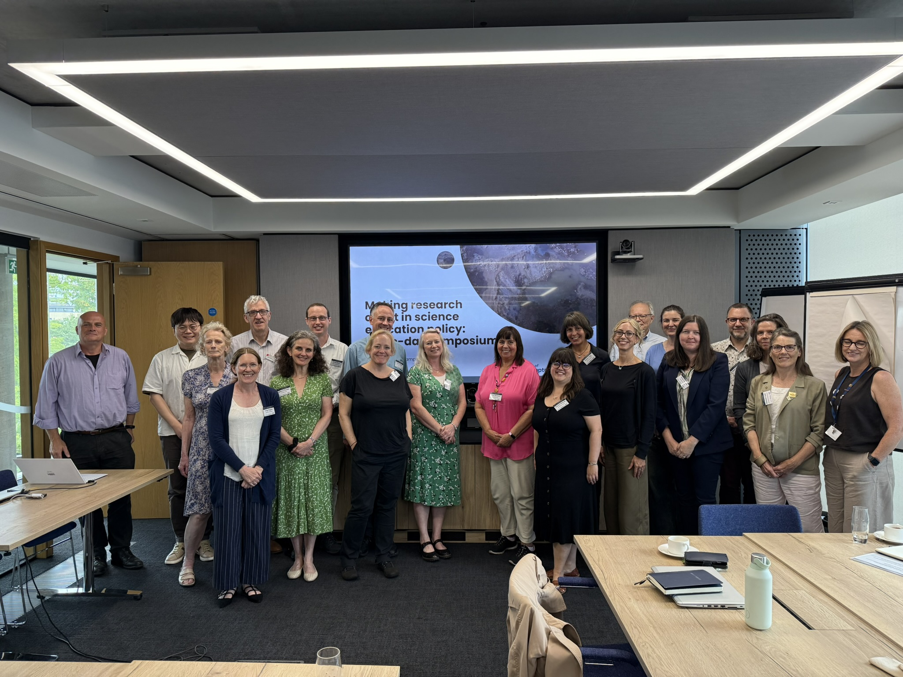
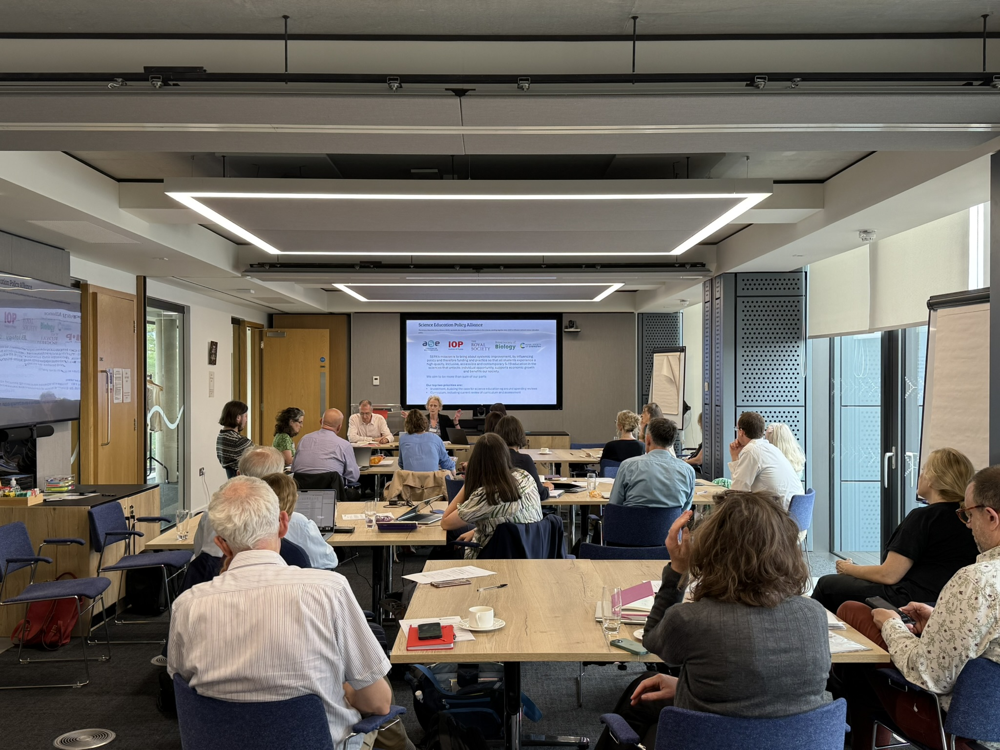

Summary
Higher education institutions (HEIs) and learned societies are key contributors of knowledge and expertise to shaping science education policy, ranging from curriculum reform and inclusion through to teacher shortages. While the role of the two sectors is pivotal to the continuous evolution of science education in England, the intersection of these two communities of practice has rarely been formally examined.
The isolation and lack of engagement between the two can lead to duplication of effort and overly siloed research and practice. Policy actors often find research published in academic journals by HEI researchers too abstract, high-level, and disconnected from practice; HEI researchers often criticise policy recommendations and measures for lacking theoretical and evidentiary underpinnings. There are clear challenges to collaboration such as horizon mismatch, misaligned incentives, and resistance to change. This project brought together these two sectors to explore future directions for research-informed policy and policy-informed research in science education.
The project combined documentary analysis, interviews and knowledge exchange with science education policy actors, learned societies and researchers. A symposium in July 2025 brought these perspectives together; its report sets out priorities for research-informed policy and research–policy dialogue.
Aims
- Map out the current landscape of science education policymaking.
- Bring together policy actors from learned societies and HEI researchers in science education.
- Facilitate the exchange of knowledge and experience between the two communities.
- Identify pathways for joint problem discovery and knowledge creation between the two communities.
- Co-develop suggestions to promote research-informed policy and research-policy dialogue.
Continuing the collaboration
Making Research Matter extends this collaboration into support for science teachers’ engagement with research. Its 2026 toolkit focuses on finding, engaging with and using research in classroom practice.
Team
- Wonyong Park, University of Southampton (Principal Investigator)
- Carys Hughes, University of Southampton (Co-Investigator)
- Chris Downey, University of Southampton (Co-Investigator)
- Elisabetta Calamelli, University of Southampton (Policy Officer)
- Marianne Cutler, Association for Science Education (Co-Investigator)
- Harry Russell, University of Southampton (Research Assistant)
Outputs
Gallery


Use the left and right arrow keys to navigate the images.